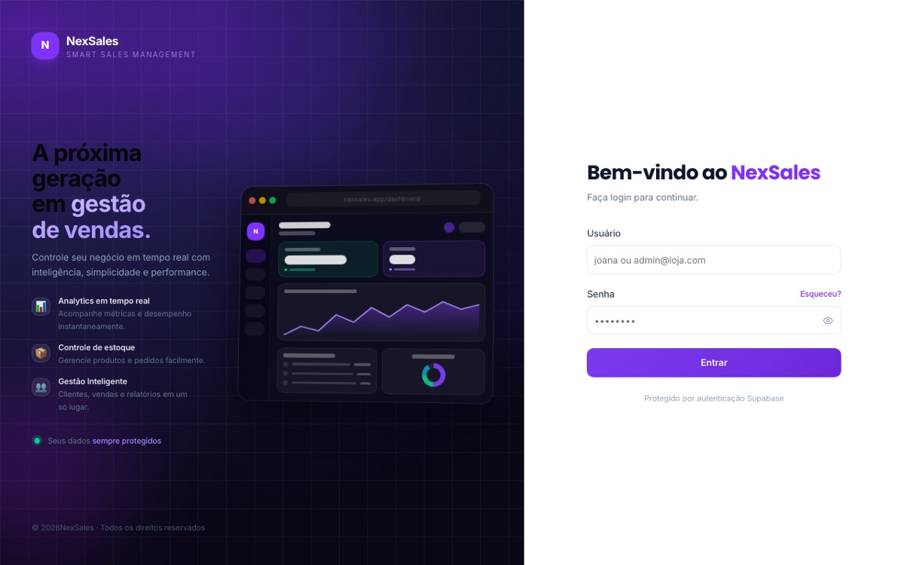

Projeto principal · fev/2026 – atual
NexSales — PDV offline-first
Ponto de venda para pequenos comércios que continua vendendo sem internet e sincroniza tudo ao reconectar, sem duplicar nada.
- Problema
- Comércio pequeno perde venda quando a internet cai, e sistemas offline costumam duplicar ou perder registros na volta.
- Decisões técnicas
- Catálogo em IndexedDB (Dexie) e fila local de vendas com replay idempotente via
client_uuid; permissões no servidor e RLS no PostgreSQL; cancelamento com restauração atômica de estoque em função PL/pgSQL. - Entrega
- PWA e app desktop Windows (Electron), leitor de código de barras, fiado, recibo térmico e relatório diário por e-mail (Vercel Cron).
- Qualidade
- 17 arquivos de teste (Vitest + fake-indexeddb), CI com typecheck, testes e build a cada push; 98 commits.
- Next.js
- TypeScript
- Supabase
- PostgreSQL
- IndexedDB
- Electron
- Vitest
- GitHub Actions